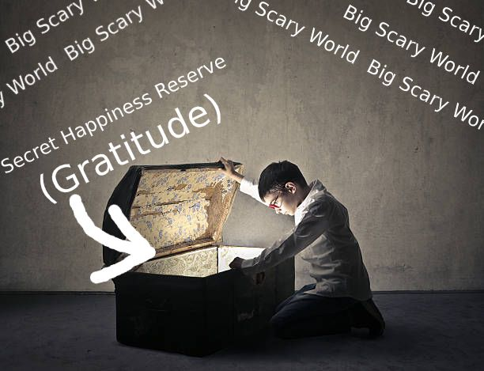
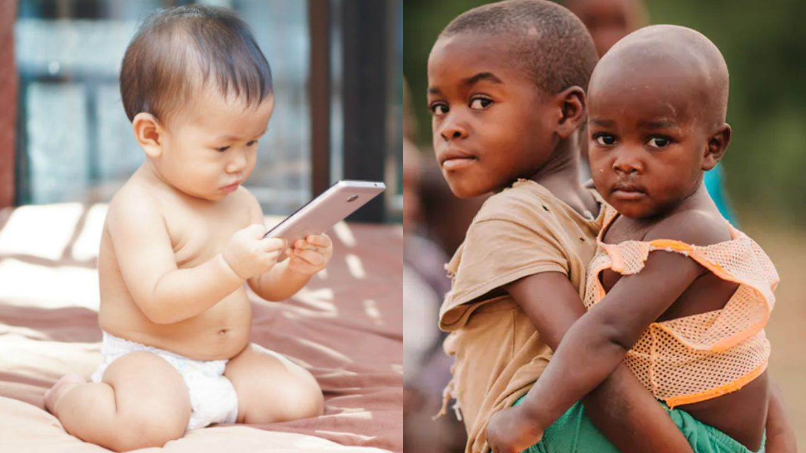
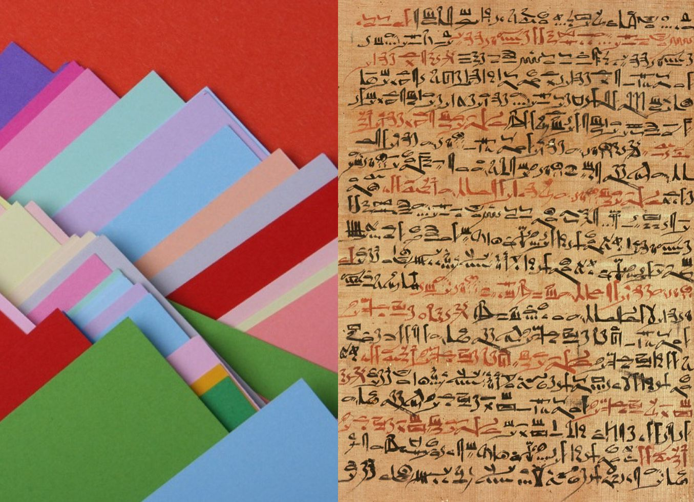

Yesterday evening, I found myself in the cold Canadian winter ❄️, frantically running to
catch a bus that was pulling away from the curb. It wasn’t the best time to be doing
that for SEVERAL reasons, including that the sidewalk was icy, it was too dark outside
to see where I was going, and I’d ate too much 5 minutes ago 😀
The header image is a 100% realistic depiction of me in that moment…
And just like ^ this person from Game of Thrones ^, I found myself helplessly
looking on as the bus pulled away. But I didn’t throw a tantrum or curse my luck.
Instead, I had a strange new voice in my head telling me to look at the situation as a
chance to practice my patience and get some exercise 😉
This new voice in my head was gratitude. And it was there because I’d been
trying to find it for the past few weeks. Usually, I would’ve easily felt frustrated,
helpless, or stressed from missing my bus. But this time, I’d been teaching myself to
HONESTLY feel glad about looking at things as an opportunity! 😃
Recently, I’ve been trying to reflect on things to be grateful for. I started to
journal them as more and more ideas came up over time. And after these weeks of
collecting ideas, the trend I’ve found is that gratitude is like my secret weapon ⚔
It lets me overcome all the negative experiences in life, just by thinking about
something that I can be grateful for. It’s like I found this extra reserve of happiness
that I’d never noticed before… but now, I could borrow some happiness whenever I missed
my buses! 🎉

Me getting that 💲💲💲 from gratitude
Just like me, I think a lot of people have this reserve of happiness. Most people have at least a few things to be grateful for… it’s just that you have to put in effort to find them (which y’know… is too much effort! 😕). But after trying to practice gratitude for the last little bit, I can say it’s definitely worth it.
Every day, I would watch some new documentary about life in developing countries, war regions, for lower classes, etc. I had never even realised all the awful lives people had! But learning about these realities made me more aware of the problems in the world AND happier about my own life in contrast :-)
Now, every time I think about losing my temper because of tiny worries like missing a bus, I have a constant reminder it could be worse. (Ex. It’s too bad I missed my bus, but at least I don’t have to be like those children in rural China that can only get to school by climbing through jungles and cliffs! 😮)
I wanted to share some of the crazy stories I’ve learned about from this experiment. These are just some of the reflections in my journal on everyday things I can be grateful for (and everyday happiness I can borrow from my reserve 😉).
1. Learning from Hard Times Makes you Appreciate the Good
I was watching this documentary about the stories of Syrian refugees escaping their countries when I realised how amazing my childhood has been. I literally could not even IMAGINE what it was like to lose everything like they did 😥:
There were people telling stories of how in a moment, military conflict would kill every person they knew. There were people telling stories of how every single memory (from the streets, to the people, to the bread ovens) became their most precious possession as they lost everything else. There were people telling stories of how they gave up their children to the seas in hopes of a better life. There were people telling stories of how months of being political prisoners robbed them of every hope. There were people telling stories of how their childhood had been replaced by a future of desperation or death. There were people telling stories of an entire nation no more.
How lucky are we in the developed world to not have to go through that??? To not even be able to IMAGINE a world where we might have to go through that? Stories like that made me grateful that I never had to be afraid. When I would go about my day, I would notice all the times I didn’t have to worry.
For example, one night I saw a car just come up and stop for a moment outside my window. My brain for whatever reason just decided it was the start of the next Jason Bourne movie and a sniper was lining up a shot. I ACTUALLY saw a flash and I thought, “Wait…😱”

In my mind, I was Jason Bourne and stuff was about to go down 😁
But they were just lost and signalling to make a U-turn. My brain was just over-reacting to things. But then, I thought about the stories I’d heard from children my age who’d been impacted by war. They would be perfectly justified in being afraid in my position. They would know what it feels like to truly fear for their lives instead of me with occasionally weird thoughts.
Most of us have never experienced these realities. Certainly, I haven’t. Learning more about them made me all the more grateful for the safe life I do have.
2. Our Modern World has More Benefits than Ever
Every day, I go out and buy something. I bet most of you do too. From food to clothes to a house, people can access so many things because of our systems of money. But I’d never stopped to appreciate how all the incredibly complex details work! 🤔
For one, shouldn’t we all love our system of credit? Credit unlocks opportunities that were impossible just a century ago! I saw a documentary about microfinance in rural villages in Africa and how it enabled families to reach prosperity one by one. They would have never been able to buy new technology for their homes and farms without loans.
And even in my own life, credit has been a powerful force. Credit is what allowed my family to buy a house when we first moved to Canada, it’s what fuels our groceries every week, and it will very well be what allows me to go to university in less than two years! 🎉
It’s easy to ignore the complicated processes going on all around the world to move digital money into credit cards, banks, loans, and so on. But if you stop to marvel at how we still manage to pull it off, I bet you’d be grateful that it somehow works 😅.
And speaking of complicated global processes, what about the Internet?!?! Information is literally free and at our fingertips with every tap of the button in our world today. Being someone who always grew up with the Internet, I can’t imagine a world without it!
And neither can the people who live in societies without this free information imagine a world other than theirs. They might not have access to the Internet because of poverty, government censorship, or all the other things that stand in the way. What are all the benefits that they’re losing out on? 😕

These children will grow up in completely different worlds based on their access to technology. 😕
For example, I watched a documentary about human trafficking in West Africa. Children were being lured in by the promise of work outside their countries and didn’t know enough to realise the dangers. Yet here I am (ON THE OTHER SIDE OF THE WORLD 🌎) and I know about it because I have access to the Internet.
I even learned to be grateful for specific parts of the Internet!
I am in LOVE with search algorithms 😍. Imagine the days when people had to physically walk through libraries to find things. And imagine us trying to walk through data warehouses these days to find what we need on the Internet 😬! Instead, I just have to put in a few words I’m thinking of and I get more relevant data than I could process in a lifetime!
And also, isn’t email great? I can reach out to people all across the world because of email. One day, I was just emailing a professor in the UK about future battery research. Imagine trying to run around town trying to find someone to talk to about stuff like that! Or slightly better: writing up a letter, finding the right addresses, finding all the postage, going to the post office, waiting at least several days, and MAYBE getting a reply back. 😖
But if all the new-fangled technology isn’t your cup of tea, you can STILL be grateful for less complicated things. How about good old lightbulbs for example? I remember working away during the evening one day when I noticed how useful lightbulbs are.
Out of the corner of my eye, I saw the sun slowly setting and I consciously decided to put aside the curtains to let the last rays come in 🌞. Everything looked really pretty! A bit later, I looked back outside and the sky had turned dark. My computer screen was dim... So I simply turned on the desk lamp and my room’s lights.
But I rarely ever think about that. Just turning on some lights. Imagine another teenager trying to get done her schoolwork in rural Kenya after a long day of work to support her family. She would see that same sun giving her those last rays of light for the day. And she might even appreciate its beauty in the same way I did.
But after the sun went down, she wouldn’t have any solution to keep on working — especially not one that’s so simple and convenient that it’s literally thoughtless for me at this point. There are over 800 million people on this planet who do not have the efficiencies or opportunities that come about from electricity. And for every one of them, something as simple as having light could unlock hours of work they could use! 😮
It’s hard to be grateful for everyday things like these. They’re parts of our day-to-day life so simple that few would even conceptualise the challenges of not having them. But when these things catch your eye (like those lights did for me), realise that you’re lucky to have them because so many others have never had the chance to.
3. Our Lives are Full of Easy Choices and Fancy Objects
There are a lot of things going right in my life at an individual level. I have so many choices in what I do, what I am, and what I have. In developed economies, we’re just used to ‘having’ things. How often do we stop and think, “WOW… I just get to HAVE [insert thing]?!?!?” 🤯
I remember this one day, my mother got high-end chocolate (as ‘gifts’ for ‘others’ 😉) and it had a strong cocoa flavour… which made me think about how it was made. On the other side of the world, some farmer (who very likely wasn’t paid enough) had to sow some seeds, take care of some land, and spend months of work until those cocoa seeds grew into trees which were harvested to get cocoa beans.
The beans then got sent across the world to be broken down in some hoity-toity factory ✨ that probably shipped in a bunch of other fancy-seeming ingredients from around the world. Likely well-paid workers helped out in the production to turn those beans (and other specialised ingredients) into chocolate.
Then, the factory decided how to package the chocolate, had teams set up marketing and distribution channels, and shipped it around the world to a Costco near me 😁. THERE, crews unloaded the shipments, arranged them on shelves, and scanned out the items when my mother bought them. All so I could eventually get to that moment today where I was just thinking about the taste of cocoa. 🤔
ALL THAT, is made accessible to me in every little thing I have. EVERY. SINGLE. PRODUCT. It’s all the product of so many complex systems around the world that I rely on every day. And that was just the example of chocolate. Imagine the horrific complexities of building my computer! 😨
Point is, when you think about how complicated it is for you to HAVE something, you appreciate it a lot more. Or, you can also think about how great it is to USE the thing you have. Somewhat similarly to the last example, think about how amazing it is to have access to fruit.
Aren’t fruit great? First of all, they’re nutritious and don’t stuff you full of the latest and greatest in random chemicals (not as much anyways… well sometimes anyways… well maybe anyways… well who really knows anything these days, just eat the stuff 😅).
Also, for a teenager with no time to cook, fruit are like nature’s prepackaged and preprocessed selection of yummies! And eating them makes me feel like a better person relative to all the planet-destroying meat production! 😉 Even better, GMOs mean they don’t spoil as easily, so they look perfect :-) Aren’t fruit just marvellous?!?!
And if fruit aren’t ordinary enough for you, how about being grateful for paper? Just the everyday stuff you write notes on. During exam season, I end up with pages and pages of sprawling notes 😬. One day, I ripped a few pages out of my notebook because I’d scribbled too many diagrams, lists, and formulas on them.
But if I wanted, I could’ve erased everything and started writing on those pages again. Instead, I had such easy access to paper that I could just throw it away without a second thought! 😕 There was a time where only the richest of pharaohs could afford to use handcrafted papyrus. Now, I’m lucky enough to have it as just another everyday object!

Our fancy paper vs. what only the most powerful pharaohs could afford 😜
And as I realised how to be grateful for being able to use these basic things, I also started to complain a lot less. I didn’t need fancy things when I was so busy thinking about how great ordinary things were. A tangible example of that is with my nice winter coat.
My parents say it’s too worn or too old or too ratty. Sure, it’s not the most stylish or comfortable, but it keeps me warm.😊 And I’ve seen people who are homeless who have worse coats than mine. What about them? If they can go through every day with worn coats, who am I to possibly complain about a few wind chills every once in a while because I don’t have the uber fancy coat?
Finally, to go back to the starting story about buses, I also realised how thankful I am for public transit. That snowy/rainy day, I didn’t really have to get wet, even when I spent hours getting from one place to the other. Luckily, I have buses and subway trains that let me get around without any worries! 🎉
Instead, I could still be out there on my bike. Some people have to be. Many don’t even have bikes! Yikes!😬So I’m very lucky to not be in that situation. On the bus ride home, I just heard the rain pattering on the roof of the bus and saw the massive puddles splashing as we drove through them. It reminded me of how amazing it was to constantly have a safe cocoon around me all day long.
How could I possibly complain about that?
Use Gratitude to Unlock YOUR Happiness Reserve
What I’m hoping you’re starting to see by now is that most of us in developing countries have EVERY reason to be grateful. You could literally look in a direction, see a random THING, and find a reason to be grateful for it! Even better, you could take the effort to learn about people who are worse off in life and realise how much better off YOU are. 😮
But whatever you do, don’t go about life complaining and worrying about little things. When you feel down about something, remind yourself of all the things you’ve found that you could be grateful for. It’s one of the best skills I’ve learned to use!
Now, you could continue to spend your life chasing buses and desperately hoping to catch them. Or you could know that sometimes you’ll miss that bus, but it doesn’t matter because everything else in your life is going right anyways. 😊
- Madhav Malhotra
Friday, 24-Jan-2020 22:32:17 GMT+0000